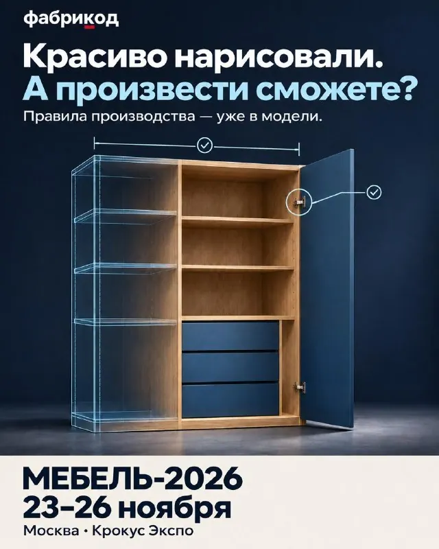

Красиво нарисовали. А произвести сможете? Иногда проблемы обнаруживаются уже после согласования дизайн-макета с клиентом: неподходящая фурнитура, недопустимый размер, несовместимые элементы. Чтобы этого избежать, конфигуратор фабрикод учитывает ограничения вашего производства и правила конструкции. Дизайнер или менеджер смогут создавать для вас заказы мебели только по проверенным конструктивным…
